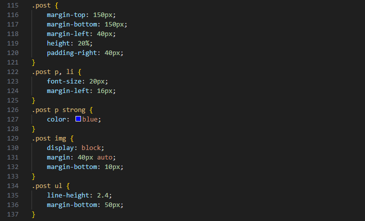

저는 정보통신공학과로 입학하면서 기초물리학, 공업수학, 전자기학 등 통신에 관한 기초 과목들을 수강해왔지만 1년전, 자료구조 과목을 수강해보고 코딩에 흥미를 접하게 되었습니다.다양한 알고리즘 문제를 풀어보거나, Chat-GPT API를 가져와 이미지 생성을 구현해보는 등 파면 팔수록 재밌는 요소를 발견했습니다.
또한 컴퓨터 네트워크 과목에서 웹 서버의 개념을 처음 공부하였고 request와 response 등 어떤 식으로 브라우저에 우리가 보는 화면이 나타나는지 구체적으로 알 수 있었습니다. 하지만 직접 웹 페이지를 제작하고자 했을 땐 어려운 점이 많았으며 제일 중요한 HTML의 작성법을 공부 할 필요가 있었습니다.
이번 파이썬장고웹프로그래밍입문 과목을 통해 웹 개발의 기반을 다질 수 있다면 좋겠습니다.
2️⃣ This Page
이 페이지는 2024년 3월 4일부터 수강한 파이썬장고웹프로그래밍입문 과목에서 공부한 내용을 기록한 페이지입니다. HTML, CSS, JavaScript으로 작성하였습니다.
좌측의 사이드바를 클릭하면 해당 파트로 바로 이동합니다.
3️⃣ HTML
< HTML의 동작 >
HTML은 Hyper Text Markup Language의 약자로 간단히 말하자면 웹사이트를 기술하는 언어입니다.
< 생활코딩 | HTML - 기술소개 >
HTML에 관한 구체적인 설명은 다른 매체를 통해 자세히 알아보시는 것을 추천합니다. 저는 생활코딩의 HTML 강좌 영상을 개인적으로 선호합니다.
F12 혹은 Ctrl + U를 입력하면 이 페이지를 작성한 HTML을 확인할 수 있습니다. 이를 바탕으로 이 문서에서 쓰인 요소들을 소개하겠습니다.
💎 상위 태그 및 헤드 태그들
<!DOCTYPE html> : 해당 문서의 타입을 정의 (HTML 5)
<html> : HTML 문서 (HTML)
<head> : 문서에 대한 정보를 기술 (타이틀, 언어, 링크 등)
<body> : 문서에 작성될 내용을 기술 (태그, 글, 이미지 등)
<title> : 해당 웹페이지의 제목 (metadata)
<meta> : 해당 문서에 대한 정보 (metadata)
<link> : 외부 소스와의 관계 (CSS 등)
<script> : 사이드 스크립트 (JavaScript 등)
💎 바디 태그들
<H1>, <H2>, ... , <H6> : 제목 (heading)
<p> : 본문 (paragraph)
<a> : 하이퍼 링크 (anchor)
<ul> : 순차 리스트 (undered list)
<ol> : 비순차 리스트 (ordered list)
<li> : 리스트 요소 (list item)
<table> : 표 (table)
<tr> : 표의 한 행 (table row)
<th> : 표의 제목이 되는 셀 (table header)
<td> : 표의 데이터 셀 (table data cell)
<img> : 이미지 (image)
<div> : 구역 (division)
<hr> : 수평선 (horizontal rule)
<br> : 줄바꿈 (break line)
<figure> : 독립된 콘텐츠 (figure)
<figcaption> : 콘텐츠의 캡션 (figure caption)
<footer> : 하단영역 (footer)
<iframe> : 현재 HTML 문서에 다른 문서를 포함 (inline frame)
<footer> : 하단영역 (footer)
외에도 다양한 태그들이 존재합니다. TCP SCHOOL에서 HTML5의 태그들을 만나보실 수 있습니다.
4️⃣ CSS

< CSS 예시 >
CSS란 Cascading Style Sheets의 약자로 사용자에게 문서를 표시하는 방법을 지정하는 언어입니다. 개인적으론 디자인 요소를 담당한다고 생각합니다. 이 CSS를 이용하여 글자의 폰트나 크기, 색상을 바꾸거나 화면에 어떻게 나타낼 지 결정할 수 있습니다.
이 페이지에서는 style.css파일을 작성하고 <link> 태그를 통해 좌측의 사이드바, 본문의 레이아웃, 이미지의 크기 등 거의 모든 요소에 CSS를 적용하였습니다. F12를 누른 뒤 CSS 폴더의 style.css 파일을 확인하여 이 페이지의 모든 CSS를 확인할 수 있습니다.
CSS에서 중요한 선택자에 대한 이해가 굉장히 중요합니다. tag, class, id 등에 대하여 원하는 요소를 선택하는 방법은 다양하지만 글로 이해하는 것보다 게임을 통해 이해하는 것이 몸에 익히기 좋기 때문에 총 32개의 레벨로 구성된 CSS Diner 게임을 소개해드립니다.